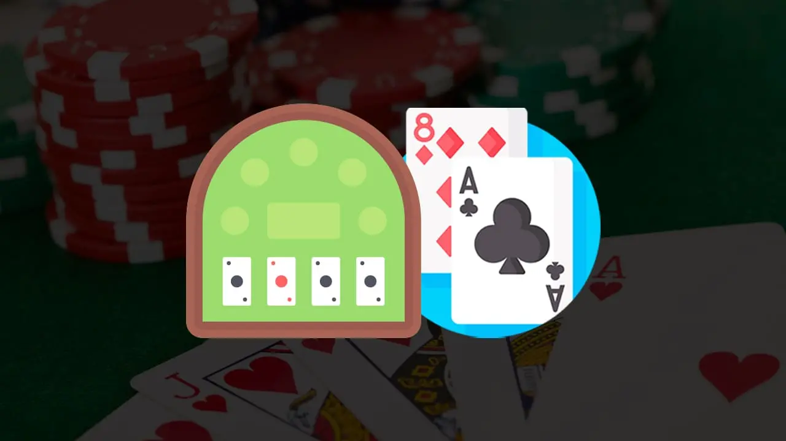

Was ist Blackjack? Alle Informationen über das Spielen von Blackjack.
Blackjack ist ein populäres Kartenspiel, das in Casinos auf der ganzen Welt gespielt wird. Das Ziel des Spiels ist es, Karten zu ziehen, deren Gesamtwert näher an 21 liegt als der des Dealers. Sie solten jedoch nicht die 21 überschreiten.
Jeder Spieler erhält zunächst zwei Karten und kann dann entscheiden, ob er weitere Karten ziehen möchte, um seinen Gesamtwert zu erhöhen, oder ob er bei seinen bestehenden Karten bleiben möchte.
Wenn ein Spieler 21 erreicht, hat er automatisch gewonnen, es sei denn, der Dealer hat auch 21. Der Dealer muss solange Karten ziehen, bis er mindestens 17 erreicht hat, und er darf nicht über 21 gehen.
Wenn der Spieler einen höheren Gesamtwert als der Dealer hat oder der Dealer über 21 geht, gewinnt der Spieler.
Welche Arten von Blackjack gibt es in den verschiedensten Casinos auf der Welt?
Es gibt viele verschiedene Arten von dem Beliebten Kartenspiel, die in man in verschiedenen Casinos und Regionen der Welt spielen kann . Einige der häufigsten Varianten sind:
- Klassischer Kartenspiel: Die Standardversion des Spiels, bei der die Spieler gegen den Dealer antreten und versuchen, 21 zu erreichen.
- Europäisches Kartenspiel: Ähnlich wie klassisches Blackjack, aber der Dealer erhält nur eine Karte zu Beginn des Spiels und darf erst ziehen, nachdem alle Spieler ihre Entscheidungen getroffen haben.
- Vegas Downtown Kartenspiel: Eine beliebte Variante, welche man in Las Vegas spielt. Bei der der Dealer zwei Karten erhält und die Spieler die Möglichkeit haben, ihre Wetten nach dem Austeilen der Karten zu verdoppeln.
- Atlantic City Kartenspiel: Eine weitere häufige Variante, die in Casinos in Atlantic City und anderen Orten gespielt wird. In dieser Variante darf der Dealer auf einer Soft 17 stehenbleiben. Die Spieler haben die Möglichkeit, ihre Wetten zu verdoppeln oder aufzuteilen.
- Live-Dealer-Blackjack: Eine Online-Version des Spiels, bei der echte Dealer das Spiel leiten und die Spieler über Live-Streaming-Video beobachten können.
„Karten zählen beim Blackjack“. Was bedeutet das?
Karten zählen ist eine Strategie, die beim Blackjack angewendet werden kann, um die Gewinnchancen zu erhöhen. Wenn mehr hohe Karten (10, Bube, Dame, König, Ass) im Deck übrig sind, erhöht sich die Wahrscheinlichkeit, dass der Spieler eine starke Hand bekommt. So kann der Spieler entsprechend seine Einsätze erhöhen.
Wenn hingegen mehr niedrige Karten im Deck übrig sind, ist die Wahrscheinlichkeit für eine starke Hand geringer, und der Spieler kann seine Einsätze verringern oder auf das Ziehen weiterer Karten verzichten.
Es ist wichtig zu betonen, dass Kartenzählen in den meisten Casinos illegal ist und auch als Betrug angesehen wird.
Casinos setzen zahlreiche Maßnahmen ein, um Kartenzähler zu identifizieren und auszuschließen, einschließlich der Verwendung von mehreren Decks, des Mischens der Karten nach jeder Hand und der Überwachung des Spielverhaltens der Spieler.
Gibt es noch andere Strategien, um beim Blackjack zu gewinnen?
Es gibt natürlich noch andere Strategien, die beim Blackjack angewendet werden können, um die Gewinnchancen zu erhöhen. Hier sind einige der gängigsten Strategien:
- Basisstrategie: Die Basisstrategie bezieht sich auf eine Reihe von Entscheidungsregeln, die darauf abzielen, die bestmögliche Entscheidung in jeder Spielsituation zu treffen. Die Basisstrategie basiert auf der Kenntnis der eigenen Hand. Der offenen Karte des Dealers und den Wahrscheinlichkeiten für das Ziehen weiterer Karten.
- Wetten nach Strategie: Eine Strategie, die sich auf die Verwaltung des Wetteinsatzes konzentriert. Dabei wird der Einsatz nach einem festgelegten Muster erhöht oder verringert, abhängig davon, ob der Spieler gewinnt oder verliert.
- Progressionssysteme: Eine Strategie, bei der die Einsätze basierend auf den vorherigen Ergebnissen des Spiels erhöht oder verringert werden. Dazu gehören Systeme wie Martingale, Paroli und D’Alembert.
- Zählen von bestimmten Karten: Abgesehen vom Kartenzählen können bestimmte Karten im Deck als „günstig“ oder „ungünstig“ eingestuft werden.
Beispielsweise können Spieler in bestimmten Situationen davon profitieren. Wenn viele niedrige Karten im Deck übrig sind oder wenn viele Asse noch nicht gespielt wurden.
Es ist wichtig zu beachten, dass keine Strategie zu 100% garantiert, dass man beim Blackjack gewinnt. Es kann jedoch helfen, die Gewinnchancen zu erhöhen und das Risiko zu minimieren.
Welche Einsätze sollte man beim Spielen von Blackjack bieten?
Die Wahl der Einsätze beim Blackjack hängt von verschiedenen Faktoren ab, wie z.B. dem Budget des Spielers, dem Tischlimit und der eigenen Risikobereitschaft.
- Setzen Sie nur Geld ein, das Sie bereit sind zu verlieren: Blackjack ist ein Glücksspiel, bei dem es immer eine gewisse Chance gibt, Geld zu verlieren. Setzen Sie daher nur Geld ein, das Sie sich leisten können zu verlieren.
- Bestimmen Sie Ihre Bankrolle: Bevor Sie spielen, sollten Sie ein Budget für Ihre Bankrolle festlegen, also den Gesamtbetrag, den sie bereit sind auszugeben. Basierend auf Ihrer Bankrolle können Sie dann den Einsatz pro Hand bestimmen. Eine allgemeine Faustregel besagt, dass der Einsatz pro Hand nicht mehr als 1-2% Ihrer Bankrolle betragen sollte.
- Berücksichtigen Sie das Tischlimit: Stellen Sie sicher, dass der von Ihnen gewählte Einsatz innerhalb des Tischlimits liegt. Es gibt in der Regel sowohl niedrige als auch hohe Tischlimits, sodass für jedes Budget etwas dabei ist.
- Passen Sie Ihren Einsatz an das Spiel an: Je nach den Regeln des Spiels und der Strategie, die Sie anwenden, kann es sinnvoll sein, den Einsatz anzupassen. Wenn Sie beispielsweise die Basisstrategie anwenden, können Sie in Situationen, in denen Sie einen Vorteil haben, den Einsatz erhöhen.
- Vermeiden Sie Wetten aufgrund von Emotionen: Vermeiden Sie es, hohe Einsätze zu tätigen, nur weil Sie eine Pechsträhne hatten oder sich auf einen Gewinn freuen. Stellen Sie sicher, dass Sie rational und vernünftig bleiben, wenn Sie Ihre Einsätze festlegen.
Es ist wichtig zu beachten, dass das Setzen von Einsätzen eine individuelle Entscheidung ist und von verschiedenen Faktoren abhängt. Es gibt keine feste Regel, welche Einsätze am besten sind, da es bei jedem Spiel und jeder Situation unterschiedlich sein kann.